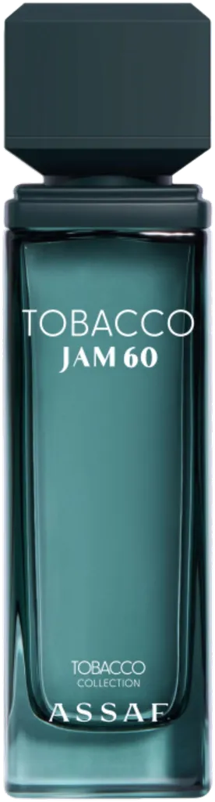

Tobacco Jam 60 by Assaf as an authentic decant — a Tobacco, Warm-Spicy, Woody, Balsamic, Oriental. an original creation. Ships across India with free shipping over ₹999 on 2+ decants.
| Size | Price | Per ml |
|---|---|---|
| 3ml | ₹185 | ₹62 |
| 5ml | ₹289 | ₹58 |
| 7.5ml | ₹449 | ₹60 |
| 10ml | ₹559 | ₹56 |
| 20ml | ₹1,075 | ₹54 |
| 30ml | ₹1,549 | ₹52 |
Currently in stock for decants.
Copy your choice and message us on WhatsApp — we confirm stock and payment instantly.
Order on WhatsAppCall +91 93555 33509Notes / profile: Tobacco, Warm-Spicy, Woody, Balsamic, Oriental.
Best for: Fall / Winter seasons, evening and night, for date-night, special-occasion, cold weather.
Mood: Cozy, Sexy.
Reminds me of: Original / unique.
References: Fragrantica
Learn how this decant is filled and verified.
Season: Fall, Winter.
Occasion: Date-Night, Special-Occasion.
Time of day: Evening, Night.
Weather: Cold.
Fragrance family: Oriental, Woody.
Made for: Unisex.
A 3ml decant is the smallest way to try this scent before committing to a larger size. New to decants? Read the decant vs full bottle guide, or see how to make perfume last longer.
It is an original fragrance in the Assaf catalogue, so there is no clone comparison involved.
IRAM Perfume sells authentic decants of Tobacco Jam 60 by Assaf at 3ml ₹185, 5ml ₹289, 7.5ml ₹449, 10ml ₹559, 20ml ₹1075 and 30ml ₹1549. Shipping is free on 2-decant orders above ₹999. Full bottles are available on request.
A unisex fragrance, it works best during Fall / Winter seasons, evening and night, for date-night, special-occasion, cold weather. It leans cozy,sexy in character with a Tobacco, Warm-Spicy, Woody, Balsamic, Oriental profile.